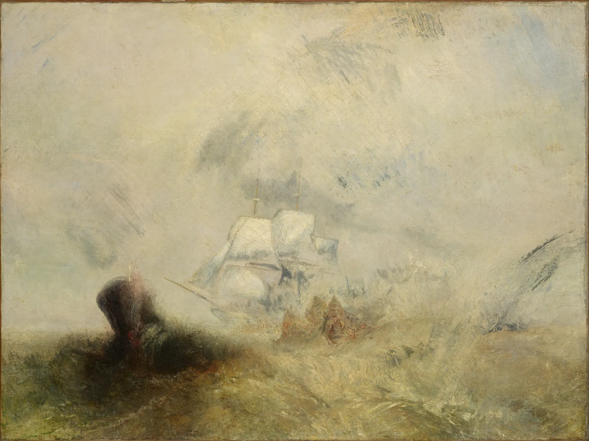
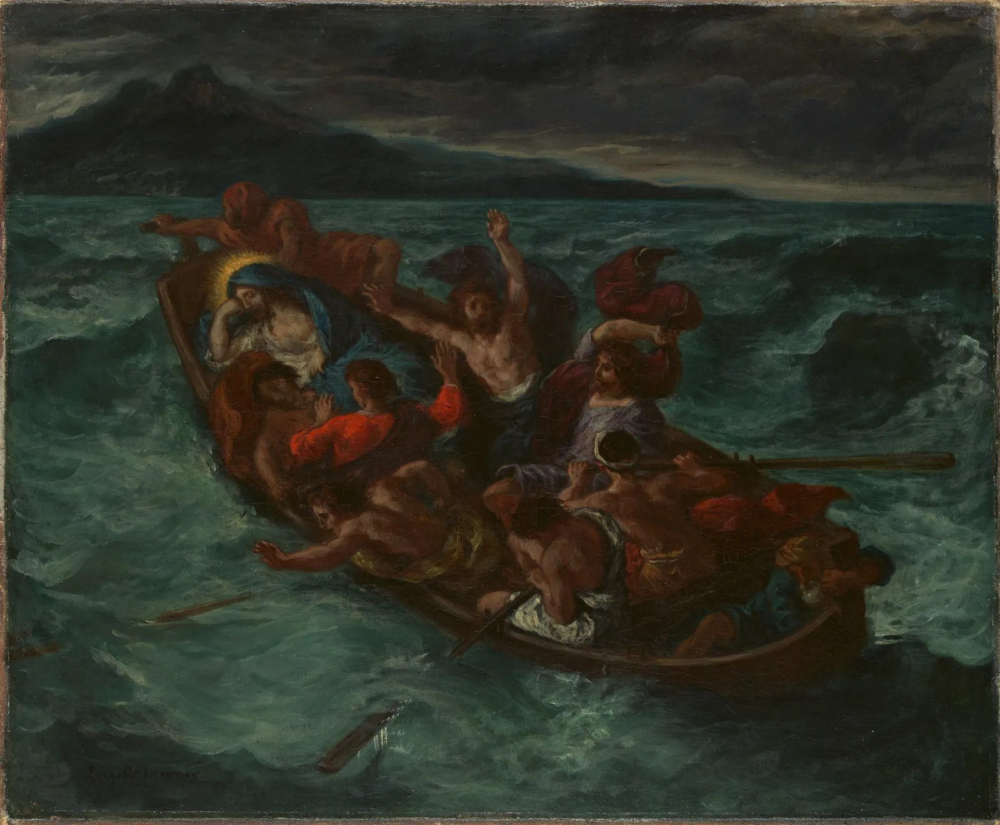
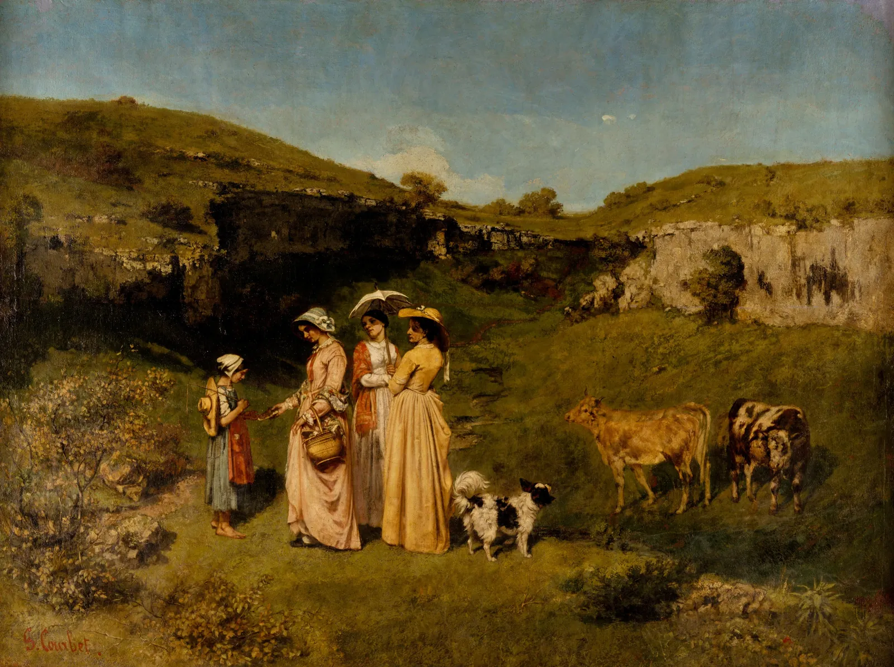

낭만주의와 사실주의
1845년 무렵 런던의 전시장에서 윌리엄 터너의 바다 그림 앞에 선 사람들은 무엇을 봤을까. 고래도 배도 물보라와 안개 속에 녹아 있고, 화면의 대부분은 누런 흰색의 소용돌이다. 반세기 전 6장의 다비드가 칼로 자른 듯한 윤곽으로 고대의 영웅을 세웠다면, 19세기 전반의 화가들은 윤곽을 풀고 붓자국을 드러내며 감정과 자연의 힘을 그렸다. 그리고 세기 중반에는 다시 방향을 틀어, 영웅도 신도 아닌 시골 처녀와 기차 삼등칸의 승객을 역사화만큼 크게 그렸다. 이 장은 그 두 흐름, 낭만주의와 사실주의를 색·구도·기법의 세 렌즈로 읽는다.
- 숭고라는 생각이 풍경화의 축척(작은 사람, 큰 자연)과 뒷모습 인물로 어떻게 화면에 들어왔는지 보고, 남송의 산수와 비교한다.
- 들라크루아의 그림에서 반대편 색의 짝이 화면의 어디에 얼마만큼 놓였는지 화소로 확인한다.
- 매끈한 마무리에서 보이는 붓자국으로 바뀐 과정을, 여러 그림의 붓질을 같은 실제 크기로 확대해 비교한다.
- 뵐플린의 "선적인 것과 회화적인 것"을 윤곽의 양으로 재어 보고, 그 측정의 한계를 안다.
- 사실주의가 무엇을(노동, 시골, 도시의 가난), 어떤 크기로 그렸는지, 장르의 위계와 함께 이해한다.
윤곽이 사라진 그림
아래 그림의 제목은 「고래잡이」다. 그런데 고래를 찾기가 쉽지 않다. 왼쪽 가운데의 짙은 덩어리가 물 위로 솟은 고래의 몸이고, 그 오른쪽의 흰 돛이 포경선이다. 그 밖의 거의 모든 것이 물보라, 안개, 빛이다.

터너(Joseph Mallord William Turner, 1775–1851)는 말년으로 갈수록 이런 그림을 많이 그렸고, 당대에도 "미완성 같다"는 비판과 "자연의 진실을 그렸다"는 옹호가 함께 따랐다. 가장 유명한 옹호자는 비평가 존 러스킨(John Ruskin)이었다. 그는 『근대 화가론』(Modern Painters, 1권 1843)에서 터너가 앞 시대의 풍경화보다 자연을 더 충실히 관찰했다고 길게 논했다.
이 장이 다루는 19세기 전반에서 중반까지의 그림은 흔히 두 이름으로 묶인다. 낭만주의(Romanticism)는 이성과 규범보다 감정, 상상, 자연의 압도적인 힘, 개인의 내면을 앞세운 흐름이다. 사실주의(Realism)는 그 반대편에서, 상상이나 이상화 없이 지금 눈앞에 있는 사람과 장소, 특히 그때까지 큰 그림의 주제가 되지 못하던 노동과 시골과 도시의 가난을 그리려 한 흐름이다.
숭고: 작은 사람, 큰 자연
18세기 영국의 정치가이자 철학자 에드먼드 버크(Edmund Burke)는 『숭고와 아름다움의 관념의 기원에 대한 철학적 탐구』(1757)에서 두 종류의 미적 경험을 나눴다. 작고 매끄럽고 부드러운 것이 주는 즐거움이 아름다움이라면, 거대하고 어둡고 끝을 알 수 없는 것, 안전한 거리에서 바라보는 위험이 주는 두려움 섞인 감동이 숭고(Sublime)다. 이마누엘 칸트(Immanuel Kant)도 『판단력 비판』(1790)에서 숭고를 따로 다뤘다. 폭풍우 치는 바다, 끝없는 산맥, 밤하늘은 이 생각과 함께 그림의 주제로 떠올랐다.
숭고를 화면에 옮기는 가장 단순한 방법은 축척이다. 사람을 아주 작게, 자연을 아주 크게. 독일 화가 카스파르 다비트 프리드리히(Caspar David Friedrich, 1774–1840)는 여기에 하나를 더했다. 인물을 등지게 세워, 보는 사람이 그 인물의 자리에서 함께 풍경을 바라보게 한 것이다. 이렇게 화면 안에서 등을 보이고 풍경을 바라보는 인물을 흔히 뒷모습 인물(Rückenfigur)이라고 부른다.


두 그림을 나란히 놓으면 "작은 사람과 큰 자연"이 유럽 낭만주의의 발명이 아니라는 것이 분명해진다. 중국 남송의 마원(Ma Yuan, 1190~1225년경 활동)은 화면 한쪽 귀퉁이에 경물을 모으고 나머지를 비우는 구도로 이름났고, 동아시아 산수화에서 자연 속의 작은 인물은 수백 년 동안 익숙한 주제였다(10장). 다만 그 자연이 주는 느낌은 같지 않다. 버크의 숭고는 두려움과 압도에서 출발하지만, 문인의 산수는 대개 자연과 어울려 머무는 마음을 그린다. 그래서 프리드리히의 큰 나무는 뿌리째 기울어 위태롭고, 마원의 소나무는 굽었어도 선비를 덮어 준다. 같은 축척, 다른 정서다. 어느 쪽이 더 앞선 것도 아니다.
아래 시뮬레이터에서 직접 그린 풍경 위의 인물을 끌어 옮기고, 인물의 키와 지평선의 높이를 바꿔 본다.
숭고의 축척
인물이 작을수록 그림은 "사람이 본 자연"이 되고, 클수록 "자연 앞의 사람"이 된다. 뒷모습은 이 전환을 늦춘다. 얼굴이 보이지 않으니 시선이 인물에 머물지 않고 인물이 보는 쪽으로 흘러간다. 앞모습은 반대로 작게 그려도 시선을 붙잡는다(CompositionBook 시선). 숭고는 결국 "얼마나 크게 그렸나"만이 아니라 "보는 사람이 어디에 서게 되나"의 문제다.
들라크루아: 선보다 색
19세기 전반 파리의 화단에서는 "선이냐 색이냐"를 두고 오래 묵은 논쟁이 다시 불붙었다. 앵그르(Jean-Auguste-Dominique Ingres)가 다비드를 이어 정확한 소묘와 매끈한 윤곽을 그림의 뼈대로 삼았다면, 외젠 들라크루아(Eugène Delacroix, 1798–1863)는 색과 붓질의 움직임으로 극을 만들었다. 비평가와 화가들은 두 사람을 맞수로 세워 이야기하곤 했다. 물론 앵그르의 그림에도 색이 있고 들라크루아도 소묘를 수없이 했으니, 이것도 강조점의 차이다.

들라크루아의 일기에는 그림자 속의 색, 이웃한 색이 서로를 바꾸는 효과에 대한 관찰이 자주 나온다. 같은 시기 파리의 화학자 미셸외젠 슈브뢸(Michel-Eugène Chevreul)은 『색의 동시 대비 법칙에 대하여』(1839)에서 나란히 놓인 두 색이 서로를 반대 방향으로 밀어 보이게 한다는 것을 정리했다(ColorBook 9장). 들라크루아가 슈브뢸을 직접 얼마나 참고했는지는 연구자마다 다르게 본다. 확실한 것은 그의 화면에서 반대편 색의 짝이 큰 역할을 한다는 점이고, 이것은 화소로 확인할 수 있다.
아래 시뮬레이터의 색상환에는 손잡이가 둘 있다. 손잡이 A의 색상(±30°)에 드는 화소는 그림 위에 제 색으로 남고, 손잡이 B의 색상(±30°)에 드는 화소는 흰 줄무늬로 표시되며, 나머지는 회색이 된다. 두 손잡이를 끌어 그림의 두 주인공 색을 찾고, 둘이 색상환에서 얼마나 떨어져 있는지 본다.
두 색의 맞섬 찾기
들라크루아의 빨강은 화면에서 작은 몫이지만, 색상환의 먼 쪽에 있는 초록 바다가 넓게 받쳐 주기 때문에 멀리서도 먼저 눈에 들어온다. 그리고 두 색의 명도가 비슷해서, 흑백으로 바꾸면 이 대비가 거의 사라진다. 이 대비는 교과서의 "정확한 보색"이 아니어도 된다. 색상이 충분히 멀고 넓이가 크게 다르면 작은 쪽이 빛난다. 들라크루아의 극은 명암(4장의 바로크)이 아니라 색상의 맞섬에서 나온다. 이 차이가 다음 세대에 중요한 유산이 된다. 인상주의 화가들, 그리고 고흐와 쇠라는 들라크루아의 색을 공부했다(8장, 9장).
붓질의 해방
18세기까지 아카데미가 기대한 완성작의 표면은 매끈했다. 붓자국이 보이지 않을 만큼 곱게 다듬은 마무리를 프랑스어로 fini(완성, 마무리)라고 불렀다. 붓자국은 밑그림이나 유화 스케치에서나 보이는 것, 곧 "덜 된 상태"의 흔적이었다. 19세기 전반의 화가들은 이 경계를 흔들었다. 존 컨스터블(John Constable, 1776–1837)은 큰 완성작에도 팔레트 나이프로 흰 물감을 점점이 얹어 젖은 잎과 구름 위의 빛을 표현했다. 영국에서는 이 흰 점을 비꼬아 "컨스터블의 눈(雪)"이라 불렀다고 전해진다. 물감을 두껍게 올려 붓자국이나 나이프 자국이 입체로 남게 칠하는 것을 임파스토(Impasto)라고 한다.
여기서 동아시아 그림과 나란히 보면 흥미로운 차이가 드러난다. 수묵화와 문인화에서는 붓질 자체가 오래전부터 감상의 중심이었다. 획의 빠르기, 먹의 번짐, 마른 붓의 갈라짐이 화가의 마음과 수련을 보여 준다고 여겼고, 서예와 같은 눈으로 그림의 선을 읽었다(10장, 11장). 유럽에서 "보이는 붓자국"이 19세기에 논쟁거리였다면, 동아시아에서 그것은 처음부터 그림의 언어였다.
아래 시뮬레이터는 이 장의 그림들을 같은 실제 크기로 확대한다. 소장처 이미지는 모두 긴 변 1600화소로 줄였지만 그림의 실제 크기는 25 cm에서 5 m까지 다르다. 그래서 화소끼리 비교하면 안 되고, 돋보기 창을 실제 센티미터로 맞춰야 한다. 돋보기를 끌어 붓질을 살피고, 창 안의 "결 지수"를 비교한다.
붓질 돋보기: 같은 실제 크기로
같은 실제 크기로 맞추고 보면 "매끈함"과 "거침"이 숫자로 갈린다. 다비드의 돌벽은 결 지수가 1에도 못 미치고, 터너의 물결과 들라크루아의 파도는 몇 배, 컨스터블의 나뭇잎은 열 배 넘게 높다. 그러나 이 도구가 보여 주는 가장 중요한 사실은 따로 있다. 사진은 붓질을 보여 줄 수도, 지울 수도 있다. 쿠르베처럼 큰 그림은 같은 1600화소 이미지에서 붓질이 녹아 버린다. 책이나 화면으로 본 그림의 "질감"을 말할 때는 그 이미지가 실제 몇 센티미터를 한 화소에 담았는지부터 물어야 한다. 그림 앞에 직접 서는 일을 대신할 수 없는 이유다.
선적인 것과 회화적인 것
스위스의 미술사학자 하인리히 뵐플린(Heinrich Wölfflin)은 『미술사의 기초 개념』(Kunstgeschichtliche Grundbegriffe, 1915)에서 르네상스와 바로크를 비교하며 다섯 쌍의 개념을 내놓았다. 그 첫째가 선적인 것과 회화적인 것(linear / painterly, malerisch)이다. 선적인 그림은 물체마다 또렷한 윤곽이 있어 하나하나 손으로 더듬듯 읽히고, 회화적인 그림은 윤곽이 빛과 그림자 속에 녹아 전체가 하나의 덩어리로 보인다. 뵐플린은 16·17세기를 두고 이 말을 썼지만, 같은 대비는 다비드와 터너 사이에서 더 극적으로 나타난다.
"윤곽이 또렷하다"는 것을 재는 간단한 방법이 있다. 이웃한 화소 사이의 명도가 급하게 바뀌는 곳, 곧 가장자리를 찾아 그 비율을 세는 것이다. 아래 시뮬레이터의 왼쪽은 원본, 오른쪽은 기준보다 급한 명도 변화만 검게 그린 가장자리 지도다. 경계선을 끌어 비교하고 기준을 바꾼다.
윤곽의 양
다비드와 보뇌르는 가장자리가 많고, 터너는 아주 적다. 컨스터블은 그 사이에 있다. 그런데 컨스터블과 터너는 같은 시대 같은 나라의 화가였고, 둘 다 하늘과 대기를 평생 연구했다. 컨스터블은 1821~22년 런던 햄스테드에서 구름을 수십 장 유화로 습작하고, 뒷면에 날짜와 시간, 바람의 방향을 적어 두었다. 터너는 같은 관찰에서 출발해 형태를 대기 속에 녹이는 쪽으로 갔고, 컨스터블은 형태를 지키면서 그 위에 빛과 날씨를 얹었다. "대기를 그린다"는 같은 목표가 윤곽의 양에서는 정반대로 나타난다.
사실주의: 본 것만 그린다
1850년대 파리에서 귀스타브 쿠르베(Gustave Courbet, 1819–1877)는 스스로 "사실주의"라는 말을 깃발로 내걸었다. 1855년 만국박람회의 미술 전시에 자기 대작이 받아들여지지 않자, 그는 박람회장 근처에 따로 가건물을 짓고 "사실주의"라는 이름을 붙여 자기 그림을 전시했다. 천사를 그리지 않는 이유는 천사를 본 적이 없어서라는 말도 그가 했다고 전해진다. 정확한 출처를 확인하기 어려운 말이지만, 그가 무엇을 지향했는지는 잘 요약한다.

지금 보면 평화로운 시골 풍경이다. 그런데 1852년 살롱에서 이 그림은 불편한 그림이었다. 이유의 상당 부분은 크기에 있다. 17세기에 세워진 프랑스 왕립 아카데미는 그림의 주제에 서열을 두었다. 신화·성서·역사의 장면을 그린 역사화(History painting)가 맨 위, 그 아래로 초상화, 풍속화, 풍경화, 정물화가 이어졌다. 이것을 흔히 장르의 위계(Hierarchy of genres)라고 부른다. 큰 화면은 위쪽 장르의 몫이었다. 쿠르베는 시골 사람들과 풍경을 역사화의 크기로 그려 이 서열을 건드렸다.
같은 무렵 장프랑수아 밀레(Jean-François Millet, 1814–1875)는 파리 남쪽 퐁텐블로 숲 가장자리의 바르비종 마을에 정착해 농민과 들판을 그렸다. 이 마을에 모여 숲과 들을 직접 보고 그린 화가들을 흔히 바르비종파(Barbizon school)라고 부른다. 오노레 도미에(Honoré Daumier, 1808–1879)는 신문의 풍자 석판화로 이름을 얻었고, 유화로는 기차 삼등칸이나 세탁부처럼 도시의 가난한 사람들을 그렸다. 로자 보뇌르(Rosa Bonheur, 1822–1899)는 파리의 말 시장과 도살장을 드나들며 동물을 해부학적으로 정확히 그렸다. 그녀가 작업을 위해 경찰에 바지 착용 허가를 받았다는 기록은 당시 여성 화가가 마주한 조건을 보여 준다.
아래 시뮬레이터는 이 장의 그림들을 소장처가 밝힌 실제 치수대로 한 벽에 건다. 사람(키 170 cm)을 끌어 그림 앞에 세워 보고, "같은 높이로" 보기로 바꿔 책이나 화면이 크기를 어떻게 지우는지 본다.
그림의 실제 크기
크기는 그림의 내용만큼이나 메시지다. 다비드의 「소크라테스의 죽음」은 철학자의 최후를 가로 2 m에 그렸고, 쿠르베는 시골 처녀들을 2.6 m에, 보뇌르는 말 시장을 5 m에 그렸다. 반대로 프리드리히의 달 그림은 가로 44 cm로, 한 사람이 가까이 서서 조용히 들여다보는 크기다. 숭고한 자연을 작은 화면에 담은 것도 하나의 선택이다. 그림을 읽을 때 치수를 먼저 확인하는 습관은 화면 속 미술사를 볼 때 가장 쉽게 잃는 감각을 되찾아 준다.
사실주의는 사진의 등장과도 시기가 겹친다. 1839년 다게레오타이프가 공개된 뒤 "보이는 그대로"를 기록하는 일은 점점 사진의 몫이 되었다. 그렇다고 사실주의 그림이 사진처럼 무엇이든 찍어 낸 것은 아니다. 밀레의 건초 더미는 낮은 지평선 위에 기념비처럼 솟아 있고, 도미에의 삼등칸 승객들은 어두운 갈색 덩어리 속에서 앞줄의 세 사람만 빛을 받는다. 무엇을 크게, 무엇을 밝게 할지는 여전히 화가가 고른다. 사실주의의 "사실"은 대상의 선택이지 기계적 복제가 아니었다.
읽기 카드 실험실
이 장의 도구를 한곳에 모은다. 그림을 고르면 주요 색과 그 넓이(k-평균), 명도의 분포, 가장 밝은 곳과 가장 어두운 곳의 중심, 윤곽의 양, 결 지수를 계산해 "색·구도·기법" 세 줄의 읽기 카드 초안을 만든다. 그림 위의 점을 끌어 "내 눈이 처음 간 곳"을 표시하면, 계산된 빛의 중심과 얼마나 떨어져 있는지도 알려 준다.
읽기 카드 만들기
카드의 숫자는 출발점이다. "선명한 색의 넓이가 2%"는 사실이지만, 그 2%가 그리스도의 후광인지 소치기 소녀의 치마인지는 그림을 봐야 안다. 그리고 내 눈이 처음 간 곳이 빛의 중심과 다르다면, 그것이 바로 이야기를 시작할 자리다. 사람의 얼굴, 동물, 글자는 밝기와 상관없이 시선을 끈다(CompositionBook 시선).
그림 읽기 모임
6회차, 붓질을 같은 크기로 확대하기
6회차는 10월 9일 토요일이다. 서윤은 처음에 그림 다섯 점을 화면 가득 띄우고 "가까이 와서 붓질을 보세요"라고 할 생각이었다. 도경이 노트북에서 이 장의 돋보기를 열어 보이며 말렸다. "화면 가득 띄우면 작은 그림은 크게, 큰 그림은 작게 보여. 붓질을 비교하려면 실제 크기를 맞춰야지." 두 사람은 활동 방법을 바꿨다. 그림마다 실제 폭 10 cm의 창을 잘라, 네 칸을 한 화면에 같은 크기로 나란히 띄운다. 참가자는 칸만 보고 어느 그림인지 맞힌 뒤 전체 그림을 확인한다.
창의 화소 수를 계산하니 문제가 하나 드러났다. 이 책의 이미지(긴 변 1600화소)로는 10 cm 창이 들라크루아 약 262화소, 컨스터블 약 143화소, 터너 약 130화소, 쿠르베 약 61화소였다. 쿠르베는 붓질이 아니라 화소가 보인다. 서윤은 쿠르베를 돋보기 활동에서 빼고, 대신 "그림의 실제 크기" 화면에 올려 크기 이야기에 쓰기로 했다. 결 지수(이 책의 모델, 같은 2 mm 간격)는 그림 전체로 재면 다비드 약 1.9, 터너 약 3.2, 들라크루아 약 3.6, 컨스터블 약 6.4였다. 안개가 넓은 터너보다 나뭇잎이 빽빽한 컨스터블이 더 거칠게 나오는 것이 재미있어서, 이 숫자는 카드가 아니라 활동 뒤의 질문으로 쓰기로 했다.
대학생 단골이 미리 남긴 질문은 "터너 그림은 미완성 아닌가요?"였다. 정 선생님은 "다비드는 붓자국이 하나도 안 보이던데, 그게 더 잘 그린 것 아니에요?"라고 물었다. 도경은 두 질문을 한 쌍으로 묶자고 했다. "완성이 무엇인지가 그 시대에 바뀌고 있었다는 걸 보여 주면 돼." 카드는 1장에서 정한 양식(색·구도·기법 세 줄과 질문 하나)을 따랐다.
| 순서 | 작품 | 색 | 구도 | 기법 | 질문 |
|---|---|---|---|---|---|
| 1 | 프리드리히, 「달을 바라보는 두 남자」(마원과 나란히) | 해 질 녘의 갈색과 보랏빛, 작은 달빛 | 등 돌린 두 사람과 기운 큰 나무 | 매끈하게 다듬은 얇은 칠 | 두 그림 속 사람은 같은 마음으로 달을 볼까? |
| 2 | 터너, 「고래잡이」 | 누런 흰색이 대부분, 고래 하나만 어둡다 | 가장 밝은 곳과 가장 어두운 곳이 가운데에서 맞닿는다 | 문지르고 긁고 덧칠한 붓질, 윤곽이 거의 없다 | 이 그림은 미완성일까? |
| 3 | 컨스터블, 「주교의 정원에서 본 솔즈베리 대성당」 | 넓은 초록, 흰 구름, 작은 붉은 점 | 나무가 액자처럼 대성당을 감싼다 | 나이프로 얹은 흰 점(임파스토) | 흰 점을 다 지우면 그림이 어떻게 될까? |
| 4 | 들라크루아, 「폭풍 속에서 잠든 그리스도」 | 넓은 초록 바다 속의 작은 빨강 | 사선으로 기운 배, 왼쪽 끝의 고요한 인물 | 파도를 따라 움직이는 굵은 붓질 | 흑백으로 보면 왜 빨강이 사라질까? |
| 5 | 쿠르베, 「마을의 아가씨들」(크기 화면) | 초록 골짜기, 밝은 드레스 | 가로 2.6 m, 역사화의 크기 | 이상화하지 않은 얼굴 | 이 장면을 이렇게 크게 그린 이유는? |
회차의 순서는 돋보기 맞히기(네 칸) → 프리드리히와 마원 → 다비드와 터너를 나란히 놓고 "완성" 이야기 → 쿠르베와 보뇌르를 실제 크기 화면에 → 카드 나누기로 정했다. 도경은 노트에 한 줄을 남겼다. "붓자국은 화가가 손을 뗀 자리가 아니라, 손을 떼기로 정한 자리다."
핵심 정리
- 낭만주의와 사실주의는 뒤에 붙인 이름이다. 19세기 전반에서 중반 사이 새로 힘을 얻은 경향(감정과 자연의 힘, 그리고 눈앞의 현실)을 가리키는 손잡이로 쓴다.
- 숭고는 버크(1757)와 칸트(1790)가 정리한 압도적인 것 앞의 감동이다. 화면에서는 작은 인물과 큰 자연, 뒷모습 인물로 나타난다. 작은 인물과 큰 자연은 남송 산수에도 있지만 정서가 다르다.
- 들라크루아의 극은 명암보다 색상의 맞섬에서 나온다. 작은 빨강과 넓은 초록 바다처럼, 명도가 비슷하고 색상이 먼 두 색은 흑백에서 사라진다.
- 매끈한 마무리(fini)에서 보이는 붓자국과 임파스토로의 변화는 "완성"의 기준이 바뀐 일이다. 동아시아 그림에서는 붓질이 처음부터 감상의 중심이었다.
- 사진 속 붓질은 그림의 실제 크기와 이미지 해상도에 달려 있다. 질감을 비교하려면 실제 크기를 맞추고, 화소가 모자란 경우는 판단하지 않는다.
- 사실주의는 노동과 시골과 도시의 가난을 역사화의 크기로 그려 장르의 위계를 건드렸다. "사실"은 대상의 선택이지 기계적 복제가 아니다.
확인 퀴즈
1. 들라크루아의 「폭풍 속에서 잠든 그리스도」를 흑백으로 바꿨더니 붉은 옷과 초록 바다의 구분이 거의 사라졌다. 가장 알맞은 설명은?
2. 1600화소 이미지로 붓질을 비교하는데, 가로 2.6 m의 쿠르베 그림에서는 붓질 대신 네모난 화소만 보였다. 올바른 판단은?
3. 쿠르베의 「마을의 아가씨들」이 1852년 살롱에서 불편하게 받아들여진 이유로 이 장의 설명에 가장 가까운 것은?
4. 프리드리히의 「달을 바라보는 두 남자」와 마원의 「소나무 아래에서 달을 보다」를 비교한 설명으로 옳은 것은?